Uneven workloads
Uniform spatial grids can assign very different reconstruction loads to each block. Parallel training then waits for the slowest block.
Large-scale scene reconstruction · 3D Gaussian Splatting
Beihang University
* Corresponding author
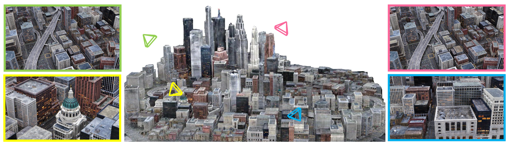
Large-scale novel view synthesis with limited computing resources. Balanced blocks, focused optimization, and consistent fusion.
Train blocks sequentially on a consumer GPU, or in parallel across multiple GPUs.
Reconstruction vs. VastGaussian across six scenes on 8× RTX 5090. Table III →
Optimized Gaussians retained after boundary pruning across four scenes. Table V.
Recent advances in 3D Gaussian Splatting have demonstrated remarkable potential in novel view synthesis. While the divide-and-conquer paradigm has enabled large-scale scene reconstruction, challenges remain in scene partitioning, optimization, and merging under GPU memory constraints. We introduce BlockGaussian, a framework for large-scale novel view synthesis that enables efficient scene reconstruction on a single consumer-grade GPU. Specifically, we propose a content-aware scene partitioning strategy that considers scene content distribution and computational load to balance reconstruction workloads across blocks and improve computational efficiency. Furthermore, a visibility-aware block optimization strategy alleviates the mismatch between block-local representations and image supervision, thereby reducing redundant computation. To preserve rendering quality after block fusion, a pseudo-view geometry constraint suppresses free-space floaters through local reprojection regularization without requiring additional captured views. Extensive experiments demonstrate that our approach substantially reduces reconstruction time while achieving rendering quality competitive with state-of-the-art methods. By decomposing large-scale reconstruction into localized block-wise subproblems, our framework reduces the per-block optimization burden and enables efficient parallel reconstruction across multiple GPUs.
Splitting a scene is only the beginning. Efficient reconstruction also needs balanced workloads, appropriate supervision, and reliable geometry at fusion.
Uniform spatial grids can assign very different reconstruction loads to each block. Parallel training then waits for the slowest block.
A block covers only part of a training image. Fitting the entire image with block-local Gaussians encourages redundant out-of-block growth.
Floaters may fit training views but become visible from novel viewpoints after independently trained blocks are merged.
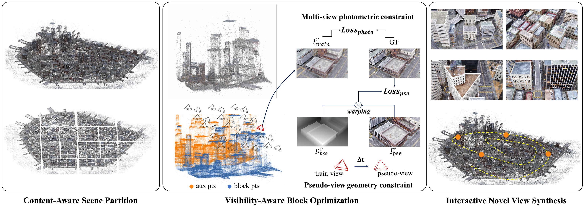
Use sparse SfM points as a proxy for scene complexity. Recursively split dense regions and assign views through visibility, without a global coarse-Gaussian optimization stage.
Auxiliary Gaussians represent visible out-of-block regions. Only block Gaussians are densified; auxiliary Gaussians remain compact and are removed before merging.
Perturb existing training views and warp the rendered pseudo views back to their reference views. Local reprojection consistency discourages unstable free-space Gaussians.
The partition adapts to the distribution of sparse scene content. Building, Rubble, Residence, and MatrixCity-Street each use 8 blocks; Sci-Art uses 4 and MatrixCity-Aerial uses 16. SfM point quality remains important for estimating reconstruction complexity.
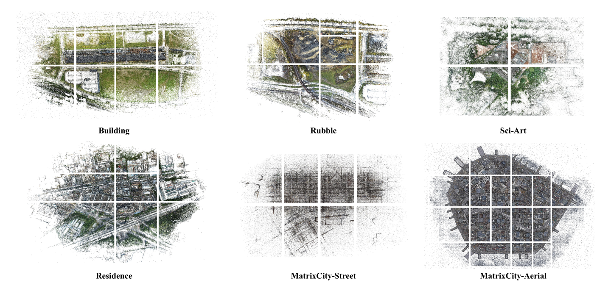
A small camera-pose perturbation creates a local pseudo view from an existing training view. Its rendered depth reprojects the image back to the reference view, where consistency with the ground truth constrains unstable free-space Gaussians without requiring additional captured views.
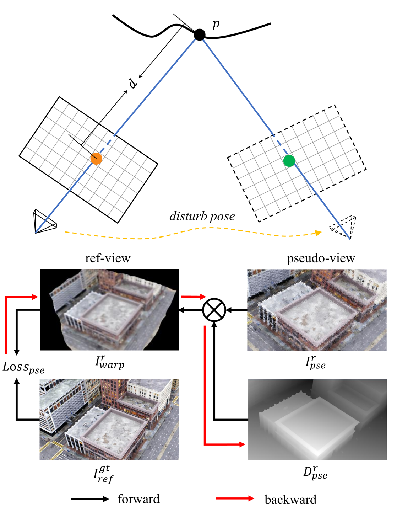
Rendering quality
Evaluate quality alongside speed. BlockGaussian preserves detailed urban structure while achieving competitive results across real aerial datasets and synthetic city scenes.
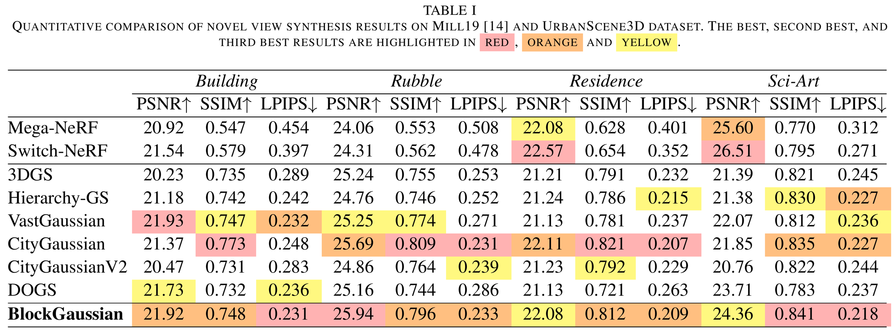
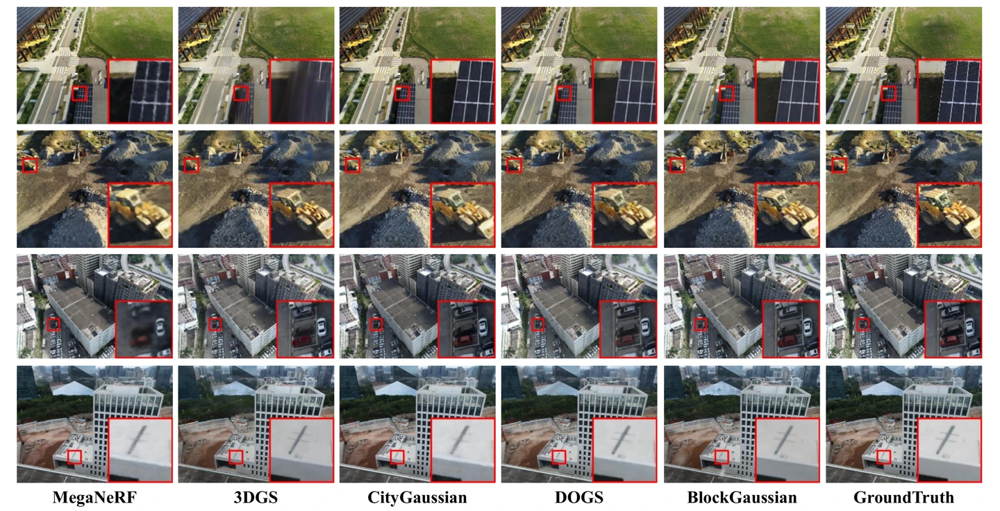
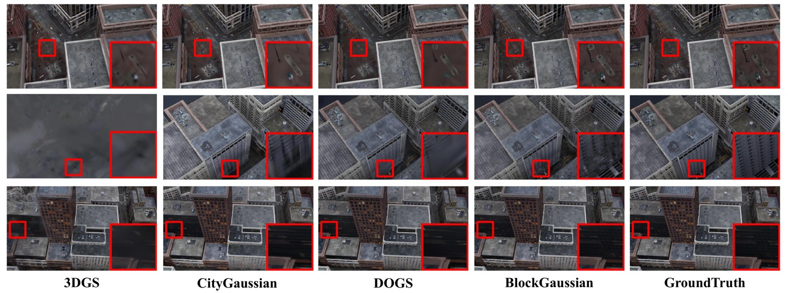
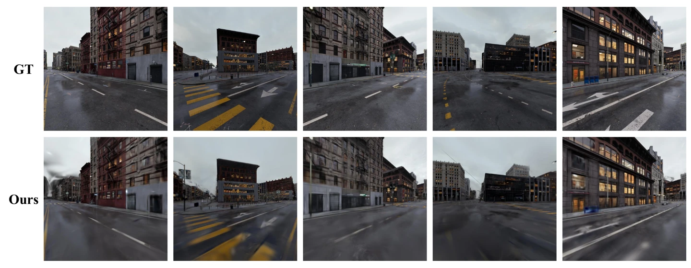
Efficiency
BlockGaussian combines lightweight partitioning, localized optimization, and balanced block workloads. The gain is visible in both reconstruction time and the proportion of optimized Gaussians that survive merging.
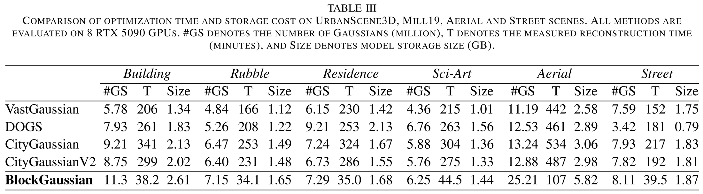
Across six scenes, reconstruction is 3.8–6.6× faster than VastGaussian on the shared 8-GPU platform. Speedups use the times in Table III.
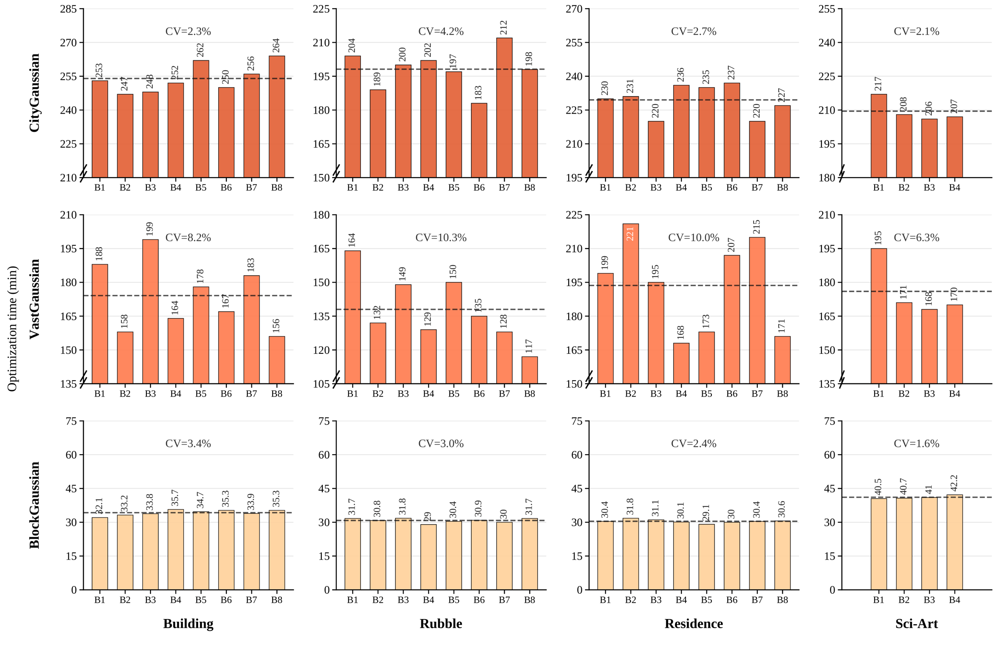
Auxiliary Gaussians show larger fluctuations in position and log-scale gradients, while block Gaussians become more stable during training. This supports treating out-of-block context separately from the block representation.
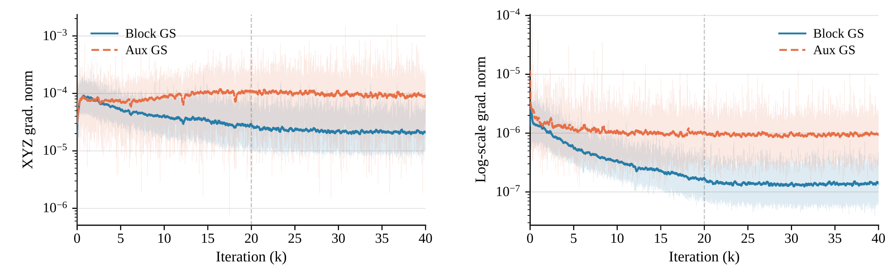
The Rubble ablation follows the adopted configuration sequence. Auxiliary context improves efficiency, while the scheduled pseudo-view loss trades some computation for better rendering quality and fewer free-space artifacts.
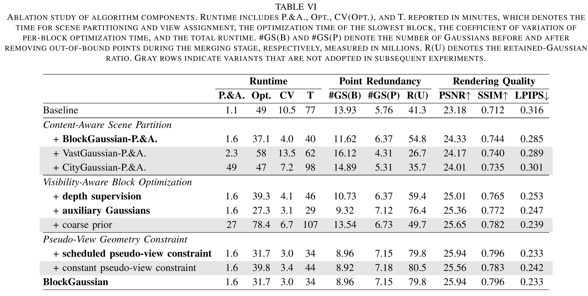
Runtime measurements use 8× NVIDIA RTX 5090 GPUs. Reproduced Gaussian methods are trained for 40,000 iterations. Mill19 and UrbanScene3D images use 4× downsampling; reproduced DOGS also uses 4× rather than its original 6× setting. VastGaussian uses an unofficial implementation; CityGaussian, CityGaussianV2 and DOGS use official codebases. Scenes are re-partitioned for the efficiency comparison. Our default batch size is 1.
Explore the reconstructions
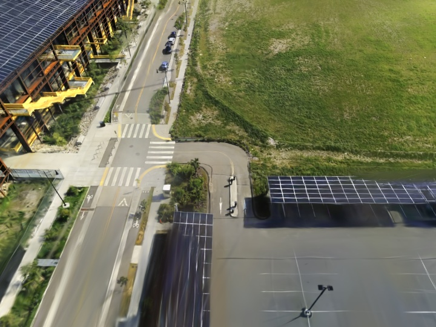
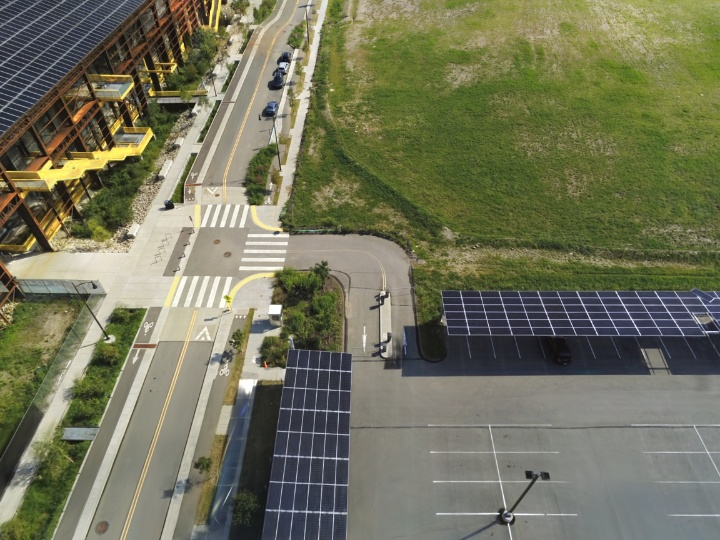
Scene Building: left is 3DGS, right is BlockGaussian. Drag the divider to compare.
Left: VastGaussian · Right: BlockGaussian
Left: CityGaussian · Right: BlockGaussian
Scope and limitations
BlockGaussian targets reconstruction efficiency. Final Gaussian counts, storage, rendering memory, and full-scene rendering latency can still grow with scene scale. Rendering-oriented techniques such as level of detail and compression are complementary directions.
Rendering quality does not guarantee geometric accuracy. The framework also relies on reliable scene initialization, so challenging image conditions or incomplete scene estimates can limit reconstruction.
@article{wu2025blockgaussian,
title={Blockgaussian: Efficient large-scale scene novel view synthesis via adaptive block-based gaussian splatting},
author={Wu, Yongchang and Qi, Zipeng and Shi, Zhenwei and Zou, Zhengxia},
journal={arXiv preprint arXiv:2504.09048},
year={2025}
}